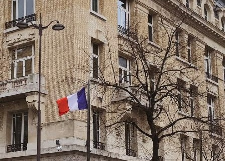
Paris, France
The city of love and romance Paris! As we used a low-cost airline, our plane landed at Paris
Beauvais
Aiport
(Rte de l'Aéroport, 60000 Tillé, France), which is
located not really closed to the very Paris. The bus
to the
city
center
was quite expensive, but we didn’t have another choice at this point. All the expenses will be
listed at
the
end of
the page.
I. Itinerary
Our trip to Paris was planned to see all the landmarks within 24 hours (not a joke, we came at 4
pm
and
had
to leave
at 4 pm of the following day) and we intended to execute the plan. If you haven’t decided yet
whether
you
want to go
to Paris or not, watch this short video and the croissant will definitely persuade you.
As stated before, we had only 24 hours to see everything and everyone in this huge city. Let's
get
down
to
business
without postponing.
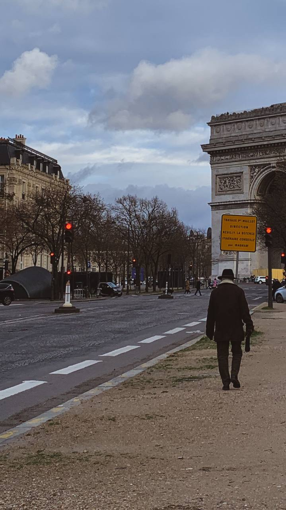
1. Arc de Triomphe
Right after the airport, we took the bus to Porte Maillot and from there
headed to the
Arc de
Triomphe.
The
Arc de Triomphe de l'Étoile is one of the most famous monuments in
Paris
and
the most
famous such arch in the world. It is located on Place Charles de Gaulle,
formerly called Place de l'Étoile,
preserved only in the name of the arch. This is the northwest of the city, at the end of the
Champs Élysées.
The Arc de Triomphe was created in honor of all those who fought and died
for France during the
French
Revolution
and the Napoleonic Wars. The name of all the places where the French won, as well as the French
generals
of
that
time, are written on the outer and inner surface of the arch. Under its arches, there is the
tomb of
the
Unknown
Soldier from the First World War.
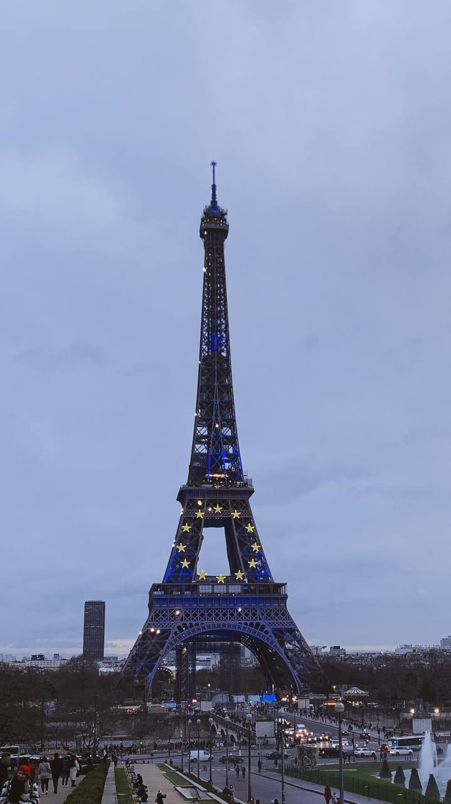
2. Eiffel Tower
Then we headed to the Eiffel Tower, the symbol of Paris. Do you know that it’s the most visited
and the
most
useless
landmark in the world? No, really, it has no specific aim but visiting it and its merchandise
are doing great
business
for the
city and country. It was a must-visit point for us to take pictures nearby in the daylight and
show
off
on
the
Instagram, of course. We headed from Champ de Mars to Eiffel Tower, went
round the Tower, took A
LOT
of
pictures of it
and with it and headed to Trocadéro. I think it was the best place to
take pictures with Eiffel
Tower from.
We
spent a
whole hour there and took a walk on the embankment to the side of the next point in the list.
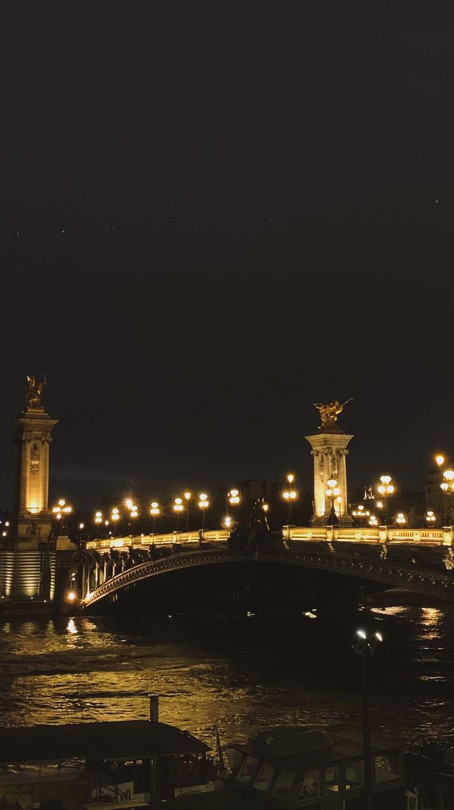
3. Pont Alexandre III
Pont Alexandre III connects the two banks of the Seine and is located just between the Champs Élysées
and
the Dôme des Invalides. The bridge was presented to France by the Russian
Emperor Nicholas II and,
decorated
with
elegant
lanterns and sculptures, is rightfully considered one of the most beautiful bridges in Paris.
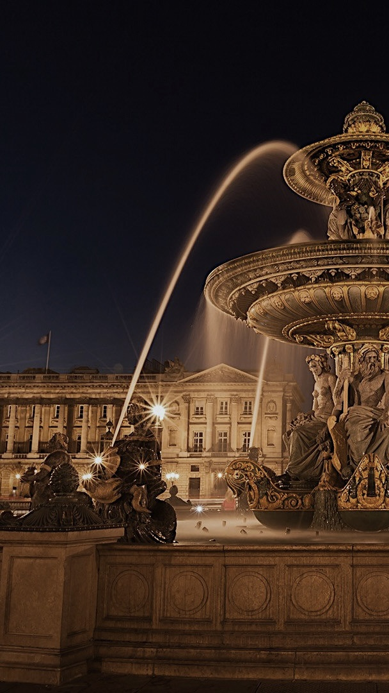
4. Place de la Concorde
Place de la Concorde is a truly vast square, an outstanding monument of
urban planning of the
classicism
era. The
decision to base the square was made by Louis XV in 1775 and entrusted
to the architect
Gabriel.
Initially, the square was an octagon surrounded by a moat, at the corners of which eight
allegorical
statues stood,
symbolizing the main cities of France. In the middle was an equestrian statue of Louis XV by
Bouchardon
and
Pigalle.
On the north side, the elegant buildings of the Naval Ministry and the Hotel de
Crillon were
erected.
Place de la Concorde is one of the most beautiful places in Paris. But
there is something
that
makes it
different. From any point of the square, a beautiful view of Paris opens up, it is not built up
around
the
perimeter
with houses - that's what makes it special.
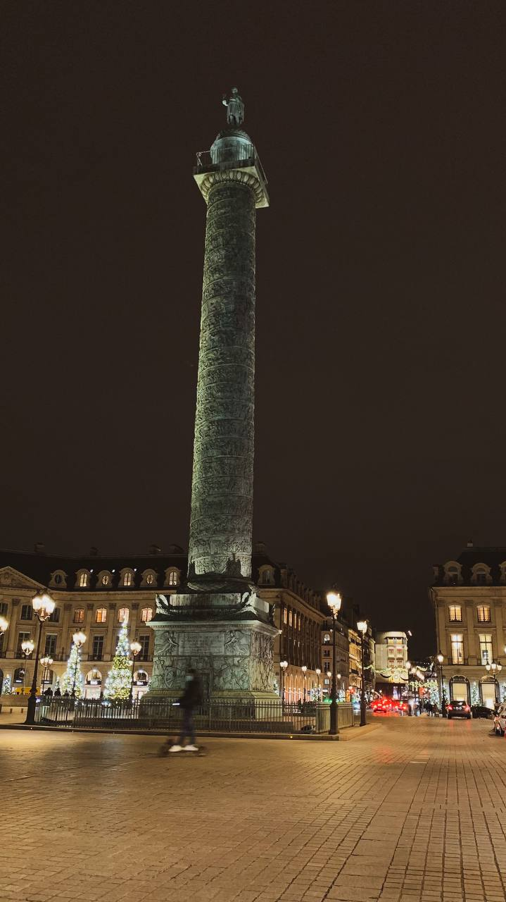
5. Place Vendôme
Place Vendôme is located in the historical center of Paris. It is one of
the five "royal
squares"
built
by
Louis the
Great. She was supposed to show the greatness of the French monarchy. Today, there is a tall
column
of
Napoleon in
the center, and mansions in the classical style are located along the edges. Also here is one of
the
most
luxurious
hotels in the country - "Ritz".
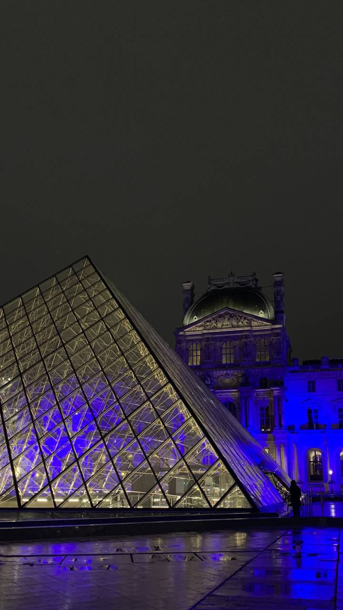
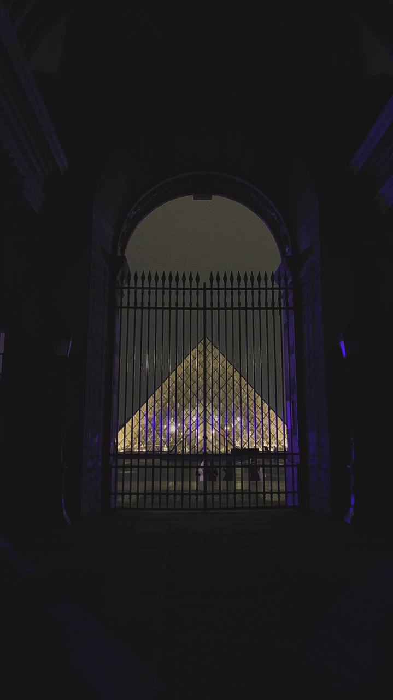
6. Louvre Museum
The most famous museum on the planet, the symbol of Paris, the pride of France... that's right -
it's
the
Louvre
Museum (Rue de Rivoli, 75001 Paris, France). And yet... imagine 22
football fields at once; fill
this
space
with
tens of thousands of sculptures, paintings, jewelry, ceramics and decor - everything that
mankind
has
produced over
the past 5 thousand years; imagine that every day two infantry divisions (25-30 thousand people)
march
through this
territory. So this is the Louvre. What you should also know is that there is not entrance fee
for
student.
Amazing,
right? But we didn't go there. We had only 24 hours to see all Paris. Only visiting Louvre
would
take
24 hours (or even more),
actually.
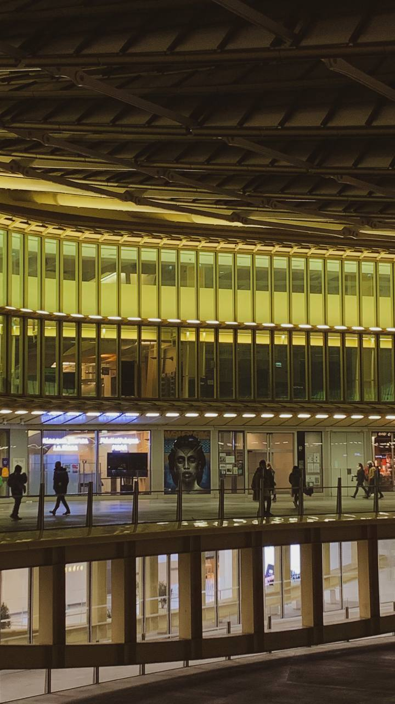
7. Les Halles
Les Halles is geographically located in the heart of Paris. It got its
name from the huge
market,
which,
even before
the second half of the 20th century, occupied several square kilometers of its territory. Only
in
the
70s it
was
decided to demolish the buildings of the old market and equip a park in its place. Actually,
it’s
just a
huge mall.
So, visit it if you have free time.
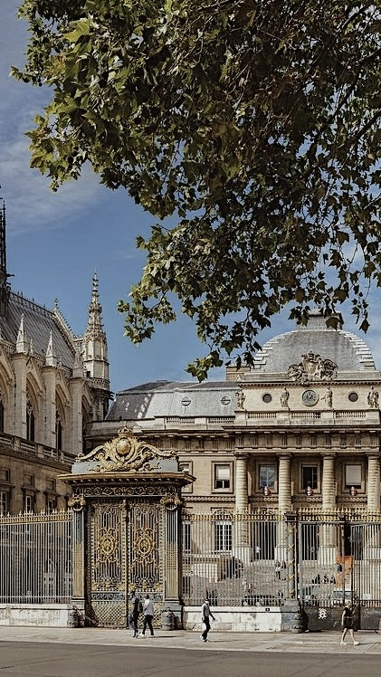
8. Sainte-Chapelle, Concierge, Palais de Justice de Paris
Sainte-Chapelle is a palace chapel on the Ile de la
Cité in Paris, built in the 13th century by
order of
Saint Louis
to store the Crown of Thorns, a fragment of the True Cross and other holy relics acquired by the
French
sovereign.
The chapel and the adjacent Conciergerie are the remains of the ancient
royal palace of Cité,
which
was
located on
the site of the present Palais de Justice de Paris. All of them are
located next to each other,
so
it’s
three birds
with one stone.
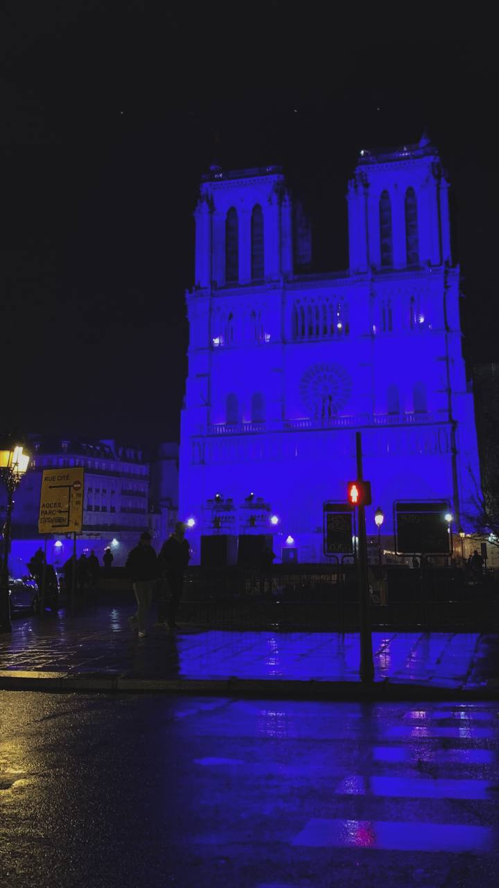
9. Cathédrale Notre-Dame de Paris
The construction of the Cathédrale Notre-Dame de Paris lasted for almost
two centuries, which,
however,
only
benefited it. At the time of laying the first stone, French architecture was dominated by the
Romanesque
style,
which was replaced by the Gothic during the construction process. The cathedral absorbed the
best of
both,
resulting in its own unique look.
It was assumed that the cathedral would be so large that it could accommodate all the
inhabitants of
Paris,
that at
that time numbered about ten thousand.
Another design feature of the cathedral is that it does not have any internal walls. They are
replaced
by
columns
connected by arches, and the rooms are separated from each other by stained-glass windows.
It is believed that one of the nails with which the cross for the crucifixion of Jesus Christ
was
knocked
together
is kept in the cathedral.
The first part of the trip is ending here. If you have enough energy, you can also go to
Eiffel
Tower to see it in the lights and take more pictures.
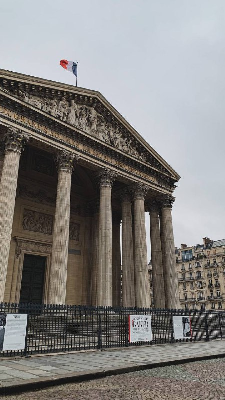
10. Panthéon
We visited the next two points on the following day. Without haste, we went to Panthéon, which
was
originally
designed as a church, but later turned into a temple.
Panthéon is located at the top of Mount Saint-Geneviève, near the Sorbonne University and the
Luxembourg
Gardens,
directed towards the Latin Quarter. Back in 507, this place was chosen by King Clovis for the
basilica
as a
tomb for
him and his wife Clotilde. In 512, Sainte-Geneviève, the patron saint of
Paris, was buried here.
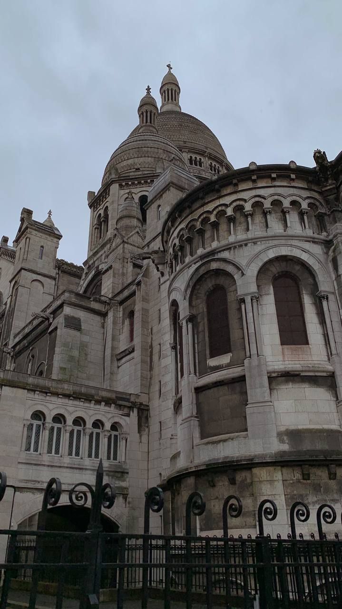
11. Sacré-Cœur
We tasted some local pastry and headed to Sacré-Cœur.
Literally,
the
name
of the
basilica is translated from French as "Holy Heart". Sacré-Cœur is located
on top of the
Montmartre
hill,
the
highest
point in the city. It's a very magnificent building which is worth attending.
II. Tips and features
Well, I definitely can recommend "Le Petit Bouillon Vavin"" (119 Bd du Montparnasse, 75006 Paris,
France).
We
had a
delicious dinner there and it was quite cheap. Probably, you will see a line on the street, but
the
line
moves fast.
It's worth waiting!
Also, keep all your documents, phones, and money in the inner pockets. I’m not sure whether this
stereotype
about
pickpockets in Paris is true, or I was lucky enough, but someone stole my electric toothbrush
from my
backpack (who
needs it, though?).
If you watched “Emily in Paris”, probably you would be eager to visit the restaurant from the
series.
It’s
“Terra Nera” (18 Rue des Fossés Saint-Jacques,
75005 Paris, France), looks quite authentic and
interesting.
If you watched “Miraculous: Tales Of Ladybug & Cat Noir”, you would probably like to visit the
bakery
from
the
cartoon. It’s “Boris Lumé Boulangerie” (48 Rue
Caulaincourt, 75018 Paris, France). The famous
bakery
looks
exactly
like in the cartoon.
Don’t forget to try the local pastry! It’s soooo good and cheap enough.
By the way, we took a lunch box with different salami and cheese. So, we did not have to spend
money
on
the
lunch.
Paris itself is quite expensive, and I hope you will be able to save some money in your trip!
III. Expenses
The list of all the expenses
Help
Here you can find the list of all the expenses
| Airbnb (apartment, 1 night) |
€42 |
| Flight tickets |
€80 |
| Airport shuttle |
€58 |
| Public transport (x5) |
€3.80 |
| Souvenirs |
€8 |
| Cup of tea (x2) |
€3 |
| Dinner |
€35.80 |
| Croissant (x2) |
€2 |
| Macaroons (x6) |
€1.60 |
| Baguette |
€1.20 |
| Tea and coffee |
€7 |
| Total |
€271 |
Epilogue
Thank you for reading it till the very end. Is Paris overrated? Maybe. Is it still good?
Definitely,
yes.
Pastry,
architecture, and the French language – what I like about this trip. Also, note that all the
expenses
should
be
divided by 2, as it’s for 2 people. I hope you will enjoy Paris. Mind your pocket! :)
{kind=link}
{kind=link}
{kind=link}
{kind=link}
{kind=link}
{kind=link}
{kind=link}
{kind=link}
{kind=link}
{kind=link}
{kind=link}
{kind=link}